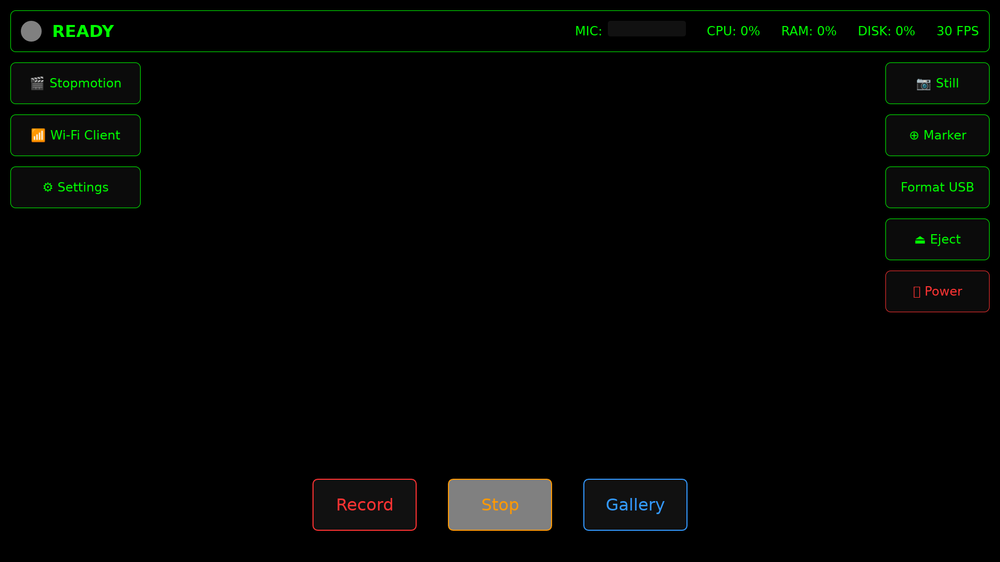
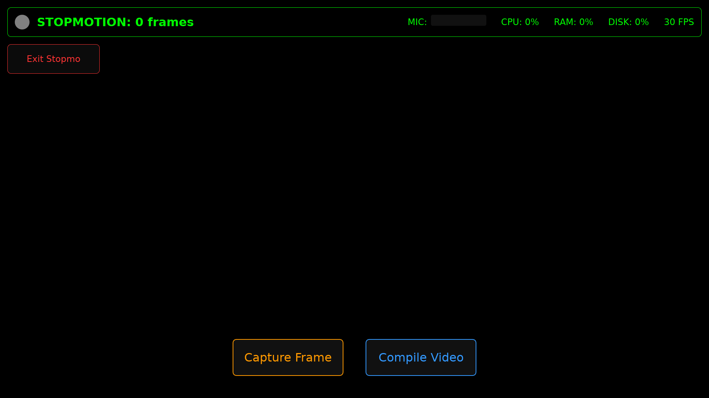
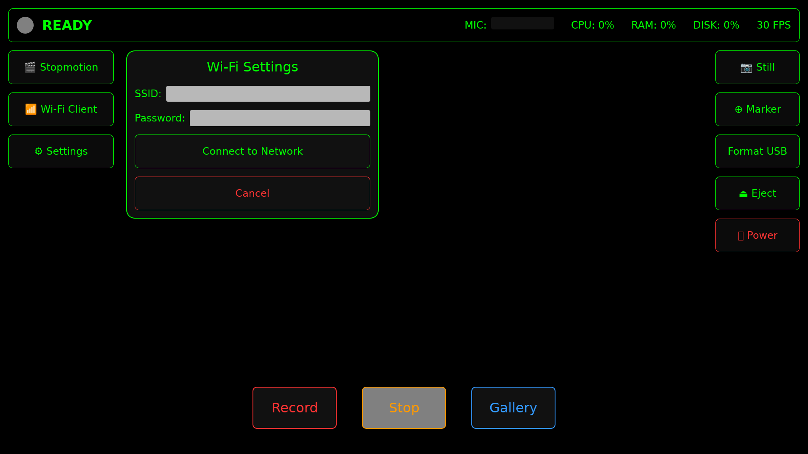
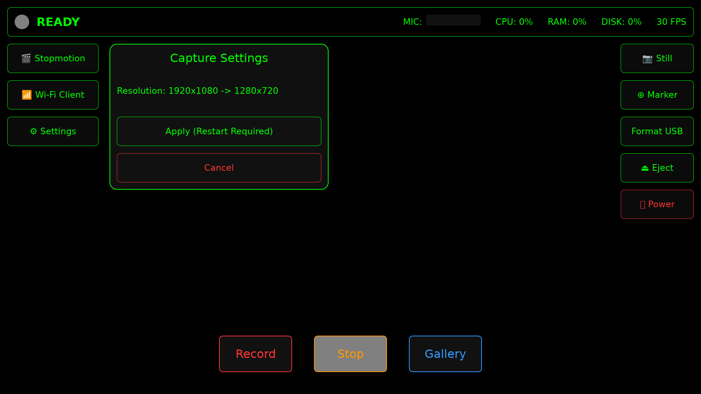
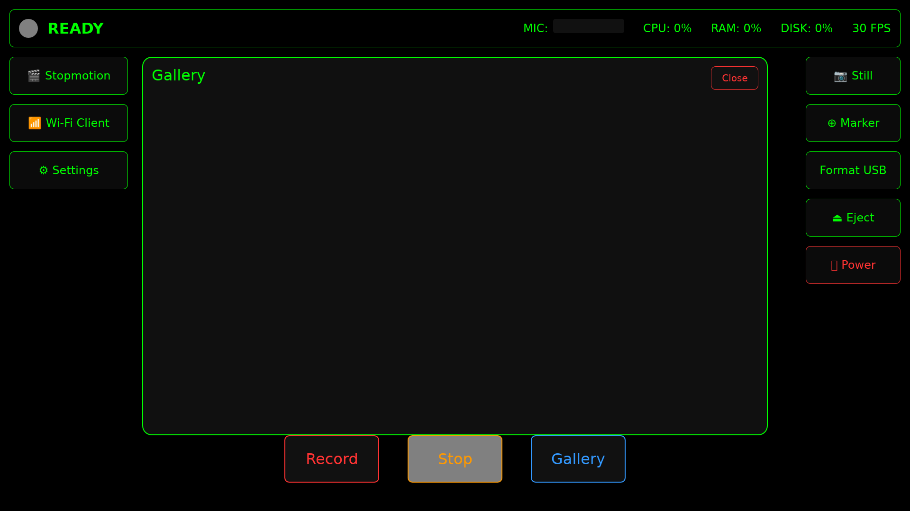

A highly resilient, hardware-accelerated DVR system built on Alpine Linux and Rust. Designed primarily for automotive dashcams and continuous video recording appliances.
fbsplash directly into the UI.aarch64) with tmpfs mounts to completely
eliminate SD card corruption on sudden power loss.tc358743 HDMI to
CSI-2 support).splitmuxsink) and auto-deletion of oldest
files when storage hits 90%.markers.txt and directly into the MP4 file
metadata (GStreamer Tags).DVR_DASHCAM_AP) and Axum-based HTTP server for mobile
video downloads over WLAN.The following screenshots are automatically generated during the CI build process to reflect the latest UI state:





build_os.sh: The master script that generates the
flashable .img via alpine-make-rootfs.dvr_app/: The Rust application that powers the UI and
video pipeline..github/workflows/build-os.yml: Fully automated CI
pipeline that tests, builds, and publishes flashable images via GitHub
Releases.This project ships rolling releases: every push to
master/main (including merged PRs)
automatically builds, versions, and publishes a new GitHub Release - no
manual tagging required.
arm64
GitHub-hosted runner for the Rust build, and QEMU
linux/arm64 emulation on ubuntu-latest for OS
image assembly.aarch64
Alpine container, and reused for both board images below.build_os.sh script
constructs the read-only OS partitions and injects the pre-compiled Rust
binary natively, producing two board-tuned artifacts:
dvr_alpine_aarch64_pi4_[VERSION].img and
dvr_alpine_aarch64_pi2-3_[VERSION].img.VERSION to v0.1.<run number>
(e.g. v0.1.42) - no tag needs to be pushed by hand..img to
.tar.gz and publishes a new GitHub Release for that
version, with both board images attached and an auto-generated changelog
since the previous release.dvr_alpine_aarch64_pi4_* - Raspberry
Pi 4 (BCM2711 / VideoCore VI). Full 1920x1080@30fps capture.dvr_alpine_aarch64_pi2-3_* - Raspberry
Pi 2 v1.2 only (BCM2837) and Raspberry Pi 3. Reduced
1280x720@30fps capture as a conservative default for the weaker
VideoCore IV GPU and Cortex-A53 CPU - raise
DVR_CAPTURE_WIDTH/HEIGHT/FPS/BITRATE
in /etc/dvr_app.env on-device if your unit keeps up with
more.
v4l2h264enc/bcm2835-codec driver
architecture across the Pi family, not confirmed end-to-end.Go to the Releases page and
download the .img.tar.gz matching your board (see Board Support above).
Extract the archive.
Flash the .img to a high-endurance SD Card using
BalenaEtcher or dd:
sudo dd if=dvr_alpine_aarch64_<board>_<version>.img of=/dev/sdX bs=4M status=progressInsert into the Raspberry Pi and power on.
All major features have been successfully migrated to native Rust: - ✅ Capturing Stills - ✅ Timeline Markers (With MP4 Tag Injection) - ✅ USB Formatting (F2FS) & Ejection - ✅ Power Controls - ✅ Stopmotion Mode (Multiple Projects & Hardware MP4 Compilation) - ✅ On-Device Playback (Gallery via MPV/GStreamer playbin) - ✅ Wi-Fi Client Mode & OSK Support - ✅ Dynamic Capture Settings